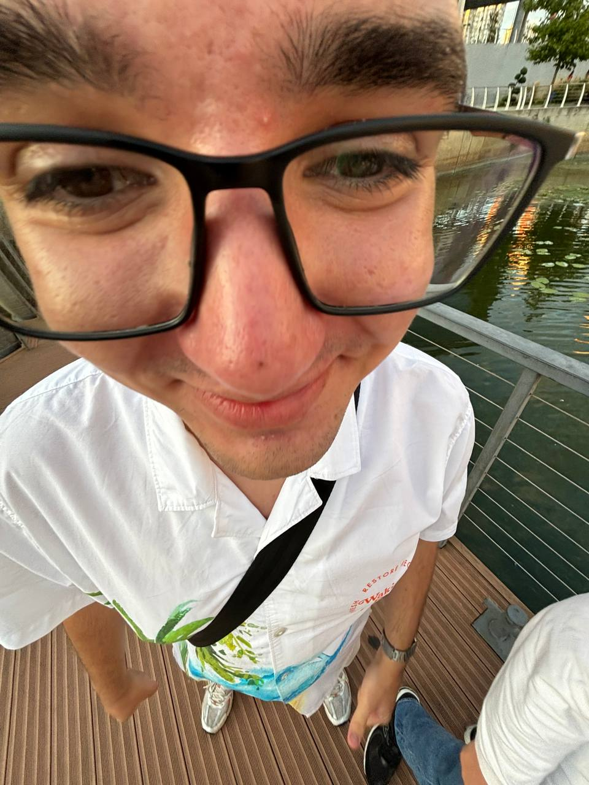

Про мене
Ім’я: Красюк Андрій Валерійович
Email: st6804353@stud.duikt.edu.ua
Студент красаучик, який вивчає веб-розробку та сучасні технології.
Ім’я: Красюк Андрій Валерійович
Email: st6804353@stud.duikt.edu.ua
Студент красаучик, який вивчає веб-розробку та сучасні технології.